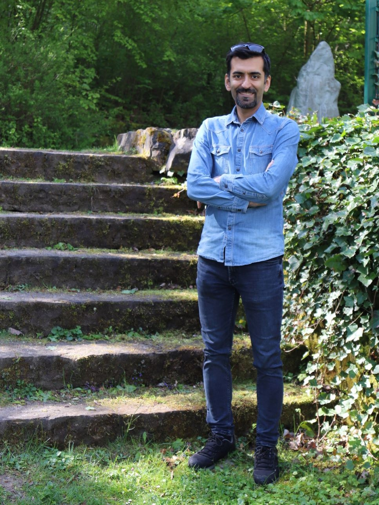

This is about me:
My name is Hamed Gharibdoost. I am Full-Stack Web Developer based in Karlsruhe, Germany.
From a young age, I enjoyed solving logical and number sequence puzzles. When most kids were playing with gaming consoles, I was learning the basics of programming on my 8-bit home computer, Commodore 64. during my studies in science, I learned deep physics and mathematics as well as so many skills that use them in my work and in everyday life. Analythical thinking, problem solving, self-study are some of them. During years of study and research in science, I discovered my strong interest in software developing and broadened my knowledge in the field. The process that I never get tired of. Learning and learning and learning. Now, I am working in my beloved field, as a full-stack web developer freelancer. My free time belongs to Learning new skills, hanging out with friends and my artistic hobies in making jweleries and carving wooden figures.
I am bulding responsive web applications using HTML, CSS and Javascript and available for contract projects:
- Front-end development
- Back-end development
- Test driven development
Download my CV